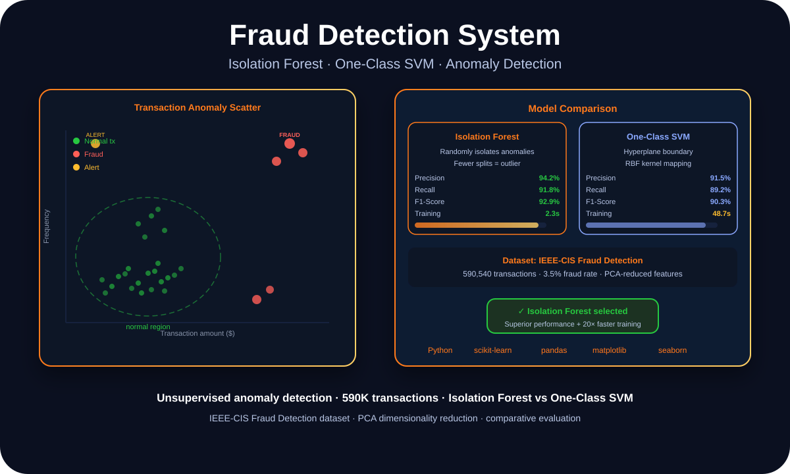

Applied AI · Anomaly Detection · Financial Security
Isolation Forest vs One-Class SVM: What 590K Transactions Taught Me About Fraud Detection

Danish Nadar
AI Engineer · Illinois Institute of Technology
Unsupervised fraud detection is harder than it sounds when only 3.5% of your data is actually fraud. Here's how I compared two anomaly detection approaches — and why Isolation Forest won by a wide margin.

Transaction anomaly scatter and Isolation Forest vs One-Class SVM comparison
The class imbalance problem in fraud
The IEEE-CIS Fraud Detection dataset has 590,540 transactions. About 3.5% of them are fraudulent. That imbalance is not a quirk of the dataset — it's representative of real fraud rates. And it creates a specific problem: a model that predicts "not fraud" for every transaction would be 96.5% accurate. That's useless for actually catching fraud.
Supervised methods can handle class imbalance through techniques like SMOTE or weighted loss functions. But those require labeled training data — which assumes you know which transactions in your training set were fraudulent. In real-world fraud detection, that label arrives late (often weeks or months after the transaction), if at all.
Unsupervised anomaly detection sidesteps the label requirement entirely: instead of learning what fraud looks like, it learns what normal looks like — and flags anything that deviates significantly.
How Isolation Forest works (and why it's fast)
Isolation Forest's core insight is elegant: anomalies are easier to isolate than normal points. Build a random decision tree, and you'll find that outliers get separated from the rest of the data in very few splits — while normal points require many splits to isolate. The anomaly score is simply the average number of splits needed to isolate a point across many trees.
This approach has a major practical advantage: it doesn't require computing distances between all pairs of points, which is what makes One-Class SVM slow at scale. On 590K transactions with PCA-reduced features, Isolation Forest trained in 2.3 seconds. One-Class SVM took 48.7 seconds.
The performance wasn't just about speed. Isolation Forest also outperformed One-Class SVM on precision (94.2% vs 91.5%), recall (91.8% vs 89.2%), and F1-score (92.9% vs 90.3%). Faster and more accurate is a clear winner.
What PCA dimensionality reduction contributed
The raw dataset has over 400 features after one-hot encoding categorical variables. Training anomaly detection models on 400+ dimensions is both slow and prone to the curse of dimensionality — in high-dimensional spaces, all points start to look equidistant, which undermines distance-based anomaly detection.
PCA reduced the feature space to 50 principal components that captured 95% of the variance. This preprocessing step had a measurable positive impact on both models' performance — and reduced training time significantly. Dimensionality reduction isn't always necessary, but for anomaly detection on high-dimensional financial data, it's almost always worth it.
Winner: Isolation Forest
F1: 92.9% · Training: 2.3s · 20× faster than One-Class SVM with better accuracy
Stack
Python · scikit-learn · pandas · matplotlib · seaborn · PCA